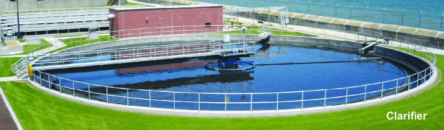
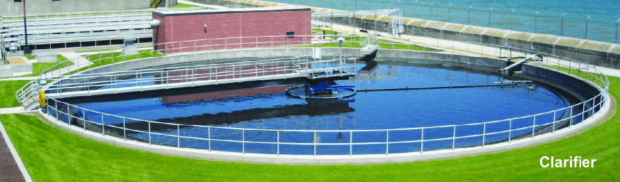
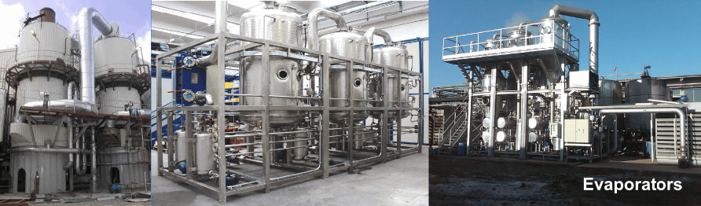
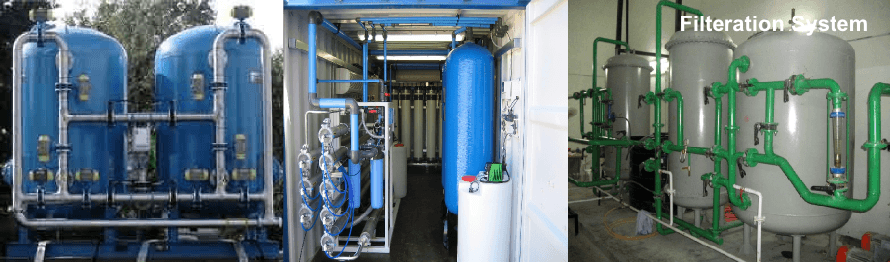
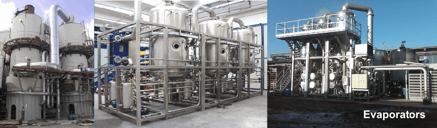
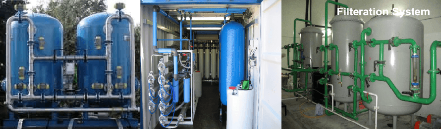

 



Cooling Tower

A Cooling tower is a heat rejection device which extracts waste heat to the atmosphere through the cooling of a water stream to a lower temperature. Cooling towers may either use the evaporation of water to remove process heat and cool the working fluid to near the wet-bulb air temperature or, in the case of closed circuit dry cooling towers, rely solely on air to cool the working fluid to near the dry-bulb air temperature.
Besides treating the circulating cooling water in large industrial cooling tower systems to minimize scaling and fouling, the water should be filtered to remove particulates, and also be dosed with biocides and algaecides to prevent growths that could interfere with the continuous flow of the water.
Under certain conditions, a biofilm of micro-organisms such as bacteria, fungi and algae can grow very rapidly in the cooling water, and can reduce the heat transfer efficiency of the cooling tower. Biofilm can be reduced or prevented by using chlorine or other chemicals.
There are typically three main components:
- The Evaporator - Typically compresses a gas to allow a heat transfer from one part of the system to another. This part of the system does not require water treatment.
- The Chilled Loop - Picks up heat at a source (i.e. air handler for incoming air into a building), transfers that heat via the evaporator.
- Open Loop - Open to the atmosphere; contains the Cooling Tower. Heat is transferred outside the building, back into the atmosphere.
From a water treatment perspective, the most critical and challenging portion of the system to treat with cooling tower water treatment chemicals is the Open Loop. Here water is cascaded over the cooling tower, providing for greater surface area that allows for air passing through the water via the tower fan to absorb heat from the water and exhaust it out of the tower. Since water is being constantly lost by evaporation, these systems require large amounts of make-up water to remain in balance.
In the Open Loop, there are four significant problem areas to be addressed with cooling tower water treatment chemicals:
Scale – Because water is continually being lost by evaporation, fresh water has to be added. With this water come certain impurities – hardness, alkalinity, silica, to name a few. As the water is evaporated, the impurities stay behind, increasing the potential for the system to begin forming scale deposits.
Corrosion – Anytime water and metal come in contact, there is going to be corrosion. How well the water treatment professional minimizes that corrosion is a measure of the water treatment program's success.
Fouling – The effect of airborne contaminants (airborne dust, dirt) that are subjected to the system by movement of the air through the water and to a lesser degree by particles falling directly into the tower (leaves, bird droppings).
Microbiological Contaminants – A layer of dead or alive microbiological growths (algae, fungi, yeasts, molds, and bacteria) that can cause corrosion, lead to increased scaling, provide a means to trap foulant materials and can cause excessive energy consumption if they build films on the heat exchange components. A microbio film of 1/64" can cause up to a 30% increase in electrical demand.